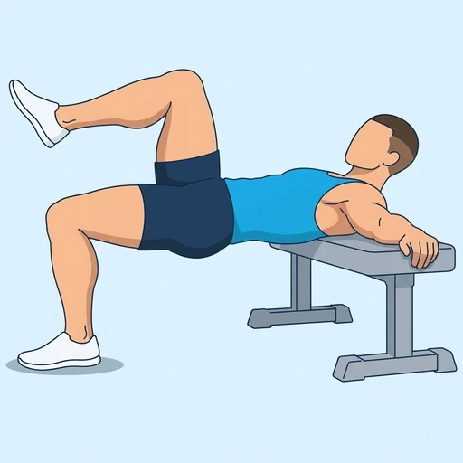

Single-Leg Hip Thrust Hold
A held top position of the hip thrust on one leg: with your upper back on a bench and one foot on the floor, you lift your hips until your body is flat and keep the other knee raised. Holding it loads the glute of the working leg through the full contraction.
Upper legs · Flat Bench · Intermediate

Muscles worked by the Single-Leg Hip Thrust Hold
Primary
Secondary
Also called: glute, glutes, gluteus maximus, buttocks, butt.
Equipment
Also called: bench, flat weight bench, utility bench, adjustable bench (flat).
How to do the Single-Leg Hip Thrust Hold
- Sit on the floor with your back to a flat bench and rest your upper back against its edge, just below your shoulder blades.
- Plant both feet flat on the floor with your knees bent, then lift one knee toward your chest.
- Keep the other foot planted under that knee and your chin tucked toward your chest.
- Drive through the planted heel and push your hips up until your body is flat from shoulders to knee.
- Keep your ribs down and hold the top position for the planned time.
- Lower your hips under control and repeat on the other leg.
Form tips
- Do not arch the lower back at the top; finish the lift by squeezing the glute rather than thrusting the ribs up.
- Keep the working shin close to vertical so the glute, not the hamstring, does most of the effort.
- Anchor the bench against a wall so it cannot slide as you push.
At a glance
| Body part | Upper legs |
|---|---|
| Category | Strength |
| Force type | Static |
| Mechanic | Compound |
| Difficulty | Intermediate |
| Equipment | Flat Bench |
| Goals | Strength, Endurance |
| Tags | Glute focus, Leg day, Lower back safe, Knee safe, Shoulder safe, No axial load, Requires bench |
| MET | 6.0 (metabolic equivalent, for calorie estimates) |
| Unilateral | Yes |
| Bodyweight | No |
| Dataset id | single-leg-hip-thrust-hold |
Single-Leg Hip Thrust Hold in German & Spanish
| German | Einbeiniger Hip-Thrust-Halt |
|---|---|
| Spanish | Empuje de Cadera a Una Pierna Isométrico |
Descriptions, instructions and tips ship in all three languages in the JSON.
Related exercises
Exercise data (JSON)
The record below is exactly what exercises.json ships for this exercise — names, descriptions, instructions and tips in English, German and Spanish.
{
"id": "single-leg-hip-thrust-hold",
"name_en": "Single-Leg Hip Thrust Hold",
"name_de": "Einbeiniger Hip-Thrust-Halt",
"name_es": "Empuje de Cadera a Una Pierna Isométrico",
"description_en": "A held top position of the hip thrust on one leg: with your upper back on a bench and one foot on the floor, you lift your hips until your body is flat and keep the other knee raised. Holding it loads the glute of the working leg through the full contraction.",
"description_de": "Eine gehaltene Endposition des Hip Thrusts auf einem Bein: Mit dem oberen Rücken auf einer Bank und einem Fuß am Boden hebst du die Hüfte, bis dein Körper flach ist, und hältst das andere Knie angehoben. Das Halten belastet den Gesäßmuskel des Arbeitsbeins über die volle Kontraktion.",
"description_es": "Una posición alta mantenida del empuje de cadera con una sola pierna: con la parte alta de la espalda sobre un banco y un pie en el suelo, elevas las caderas hasta que el cuerpo queda plano y mantienes la otra rodilla elevada. Mantenerla carga el glúteo de la pierna de trabajo durante toda la contracción.",
"category": "strength",
"force_type": "static",
"mechanic": "compound",
"difficulty": "intermediate",
"equipment": "flat_bench",
"body_part": "upper_legs",
"primary_muscles": [
"gluteus_maximus"
],
"secondary_muscles": [
"gluteus_medius",
"hamstrings",
"quadriceps"
],
"goals": [
"strength",
"endurance"
],
"tags": [
"glute_focus",
"leg_day",
"lower_back_safe",
"knee_safe",
"shoulder_safe",
"no_axial_load",
"requires_bench"
],
"variation_group": "hip-thrust",
"is_unilateral": true,
"is_bodyweight": false,
"instructions_en": [
"Sit on the floor with your back to a flat bench and rest your upper back against its edge, just below your shoulder blades.",
"Plant both feet flat on the floor with your knees bent, then lift one knee toward your chest.",
"Keep the other foot planted under that knee and your chin tucked toward your chest.",
"Drive through the planted heel and push your hips up until your body is flat from shoulders to knee.",
"Keep your ribs down and hold the top position for the planned time.",
"Lower your hips under control and repeat on the other leg."
],
"instructions_de": [
"Setze dich mit dem Rücken zu einer flachen Bank auf den Boden und lehne den oberen Rücken an ihre Kante, knapp unterhalb der Schulterblätter.",
"Stelle beide Füße flach auf den Boden, die Knie gebeugt, und ziehe dann ein Knie zur Brust.",
"Lasse den anderen Fuß unter diesem Knie aufgesetzt und das Kinn zur Brust gezogen.",
"Drücke dich über die aufgesetzte Ferse ab und schiebe die Hüfte nach oben, bis dein Körper von den Schultern bis zum Knie flach ist.",
"Halte die Rippen unten und halte die obere Position für die geplante Zeit.",
"Senke die Hüfte kontrolliert ab und wiederhole mit dem anderen Bein."
],
"instructions_es": [
"Siéntate en el suelo de espaldas a un banco plano y apoya la parte alta de la espalda en su borde, justo debajo de los omóplatos.",
"Apoya ambos pies planos en el suelo con las rodillas flexionadas y luego lleva una rodilla hacia el pecho.",
"Mantén el otro pie apoyado bajo esa rodilla y la barbilla metida hacia el pecho.",
"Empuja con el talón apoyado y sube las caderas hasta que el cuerpo quede plano desde los hombros hasta la rodilla.",
"Mantén las costillas bajas y sostén la posición alta durante el tiempo previsto.",
"Baja las caderas con control y repite con la otra pierna."
],
"tips_en": [
"Do not arch the lower back at the top; finish the lift by squeezing the glute rather than thrusting the ribs up.",
"Keep the working shin close to vertical so the glute, not the hamstring, does most of the effort.",
"Anchor the bench against a wall so it cannot slide as you push."
],
"tips_de": [
"Gehe oben nicht ins Hohlkreuz; beende das Heben, indem du das Gesäß anspannst, statt die Rippen nach oben zu schieben.",
"Halte das Schienbein des Arbeitsbeins nahe an der Senkrechten, damit der Gesäßmuskel und nicht der Beinbeuger den Großteil der Arbeit leistet.",
"Sichere die Bank an einer Wand, damit sie beim Drücken nicht wegrutschen kann."
],
"tips_es": [
"No arquees la zona lumbar arriba; termina la subida apretando el glúteo en lugar de empujar las costillas hacia arriba.",
"Mantén la espinilla de la pierna de trabajo cerca de la vertical para que el glúteo, y no el isquiotibial, haga la mayor parte del esfuerzo.",
"Fija el banco contra una pared para que no se deslice al empujar."
],
"met": 6.0,
"images": {
"flat": {
"main": "images/flat/single-leg-hip-thrust-hold-main.webp"
}
}
}Fetch just this exercise
const { exercises } = await fetch(
"https://exercise-dataset.com/exercises.json"
).then(r => r.json());
const ex = exercises.find(e => e.id === "single-leg-hip-thrust-hold");Free for personal and commercial in-app use with attribution (“Exercise data by RepDB”) — see the license and ready-made attribution snippets. Redistributing the data as a dataset or API is not permitted.